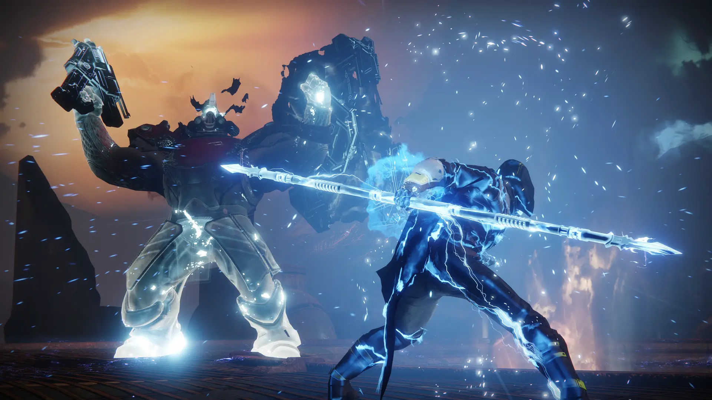

Sobre darth vader
Todos os fãs de Star Wars sabem que os filmes não foram lançados em ordem cronológica. Por isso, para te contar quem é Darth Vader, precisamos começar pela segunda trilogia lançada nas telonas. Ela revela as origens do vilão, que inicialmente se chamava Anakin Skywalker.
Essa trilogia conta com os episódios: A Ameaça Fantasma, O Ataque dos Clones e A Vingança dos Siths. No primeiro, Anakin era bem novinho, vivendo com a mãe no planeta Tatooine. Quando o mestre jedi Qui-Gon chega ao lugar e percebe a presença da força com o menino, pede à mãe dele que o leve para ser treinado.
No segundo filme, Anakin Skywalker está mais velho e é o padawan de Obi-Wan Kenobi, um poderoso jedi. Ele é apaixonado pela senadora Padmé Amidala, que já aparece no primeiro filme, porém, os jedi não podem ter esposas. Por isso, os dois se casam escondidos.
O ápice da história de Anakin nessa trilogia acontece no terceiro filme. Temendo pela, o garoto se une a Palpatine, um sith, o maior inimigo dos jedi. Ele luta contra Obi-Wan e perde, ficando muito machucado. O mestre malvado o resgata e o coloca em uma máquina para salvar a vida dele. Assim, ele se torna o temido Darth Vader..
Um ano e muitas reuniões depo o aperto de mão final que selou a união de América e Internacional. Surgia o maior clube de futebol do Paraná, o Clube Atlético Paranaense, fundado em 26 de março de 1924.
